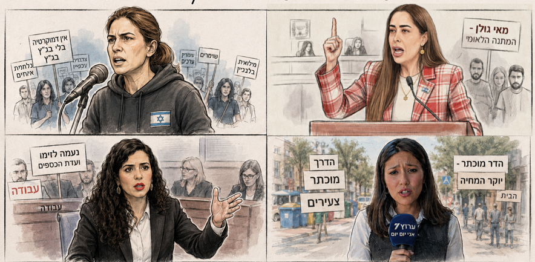

המכשפה, האויבת, המטפסת והמודחת
ארבעה סגנונות עתיקים של שנאת נשים — ישראל 2026
אמנון זוסמן | 19 באוגוסט 2026

ארבע נשים, ארבעה נרטיבים: הקצה המגדרי של מלחמת ההגמוניות.
ציד המכשפות החדש: מהכיכר לפייסבוק

באירופה של המאות ה-16 וה-17, החברה הפנתה אצבע מאשימה כלפי נשים שנתפסו כחריגות. בישראל 2026, הכיכר הוחלפה בפיד, והלפידים בלייקים ותגובות נאצה. ניתחתי כ-4,000 תגובות לארבע דמויות מפתח, והתוצאות מצביעות על דפוסים שונים לחלוטין של איום ושנאה.
עד כאן: האחריות המשותפת
אולי הנשים משני הצדדים צריכות להיות הראשונות לומר לגברברי המקלדת של המחנה שלהן: עד כאן. כי המילים של היום הן הדלק לאלימות של מחר. מלחמת הגמוניות אינה הצדקה לפירוק המדינה.
אם נשכיל להבין שהשנאה המגדרית היא רק סימפטום למאבק עמוק יותר, אולי נבין שאנחנו על סף תהום. הגיע הזמן לעצור את השיח שמבקש למחוק, ולהתחיל את השיח שמבקש להתקיים.